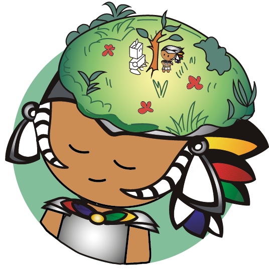
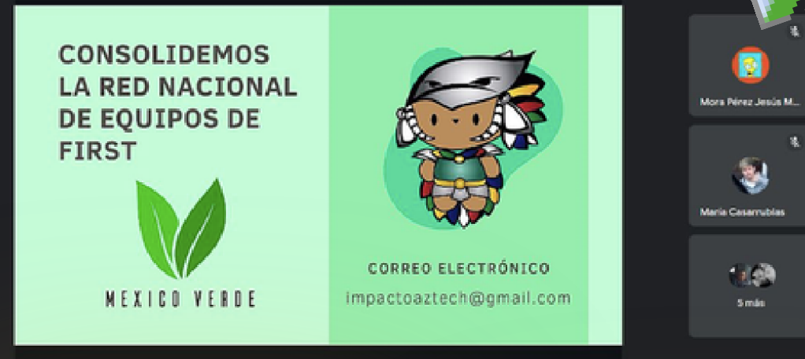
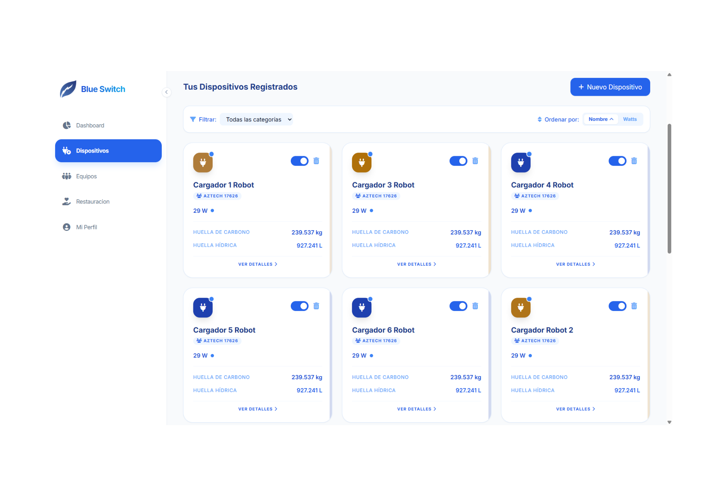
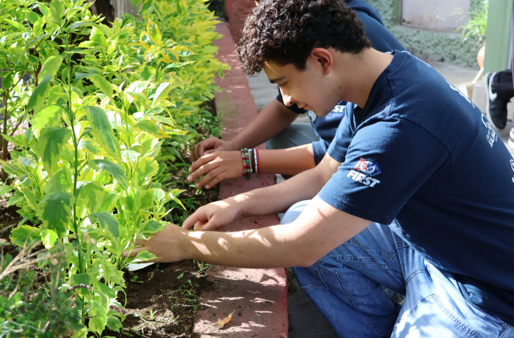
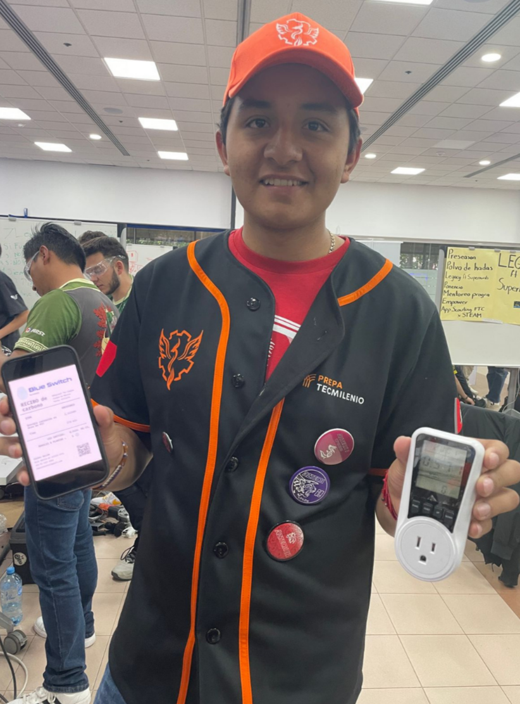
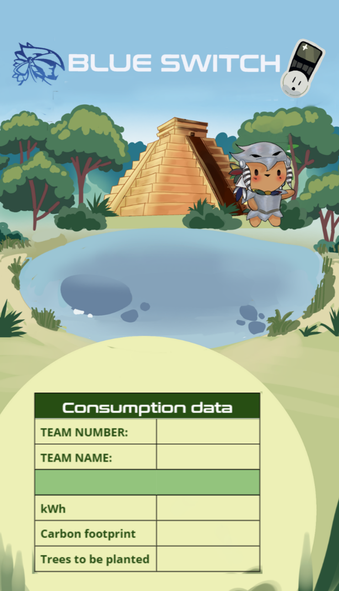

Medir, compensar, inspirar.
En Aztech I vivimos la tecnología: la diseñamos, la programamos y competimos con ella. Nuestro Pilar Verde es la responsabilidad que asumimos para medir nuestro impacto ambiental, compensarlo con acciones concretas e inspirar a otros.

La tecnología impulsa el progreso, pero también tiene un costo. Proponemos usar esa misma tecnología para medir ese costo, compensarlo con acciones concretas e inspirar a otros a responsabilizarse de su propio impacto.

Primero medimos, porque no se puede mejorar lo que no se conoce. Luego actuamos, porque los números solo importan cuando se convierten en algo real. Y finalmente expandimos, porque la conciencia ambiental vale más cuando se comparte.
Blue Switch empezó como hoja de cálculo, se convirtió en página web en 2022. Esta temporada recibió mejoras de diseño y funcionales. Usando la fórmula oficial de SEMARNAT, calcula las emisiones de CO₂ y te dice exactamente cuántos árboles necesitas plantar.

Colaboramos con especialistas de Un Nuevo Bosque en restauración de flora nativa. En 2025 plantamos 8,472 árboles, compensando aproximadamente 101 toneladas de CO₂.

Creamos una Red Blue Switch en eventos FIRST de México. Llevamos medidores para monitorear consumo de energía en pits. Al final de cada evento, los equipos reciben un ticket personalizado con sus resultados.

